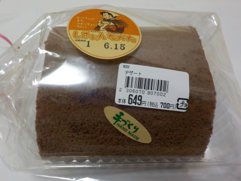
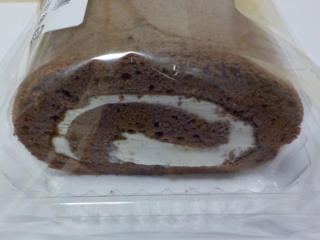

しふぉんながたの米粉ロールケーキ（ショコラちゃん）
2019/06/15
原材料によると小麦粉無しの米粉ロールケーキのようです。

卵と米粉は安来産と表記してありました。地元食材を使ってていいですね。

お米なせいか食感がちょっと固いですが、小麦粉なしでこの柔らかさは凄いって思いました。
小麦アレルギーの人にいいのかも？。アレルギー表示は無かったと思うのでお店に聞かないとわからないかな。
島根県安来市赤江町655
2019/06/15
原材料によると小麦粉無しの米粉ロールケーキのようです。

卵と米粉は安来産と表記してありました。地元食材を使ってていいですね。

お米なせいか食感がちょっと固いですが、小麦粉なしでこの柔らかさは凄いって思いました。
小麦アレルギーの人にいいのかも？。アレルギー表示は無かったと思うのでお店に聞かないとわからないかな。
ご飯とクリーム。